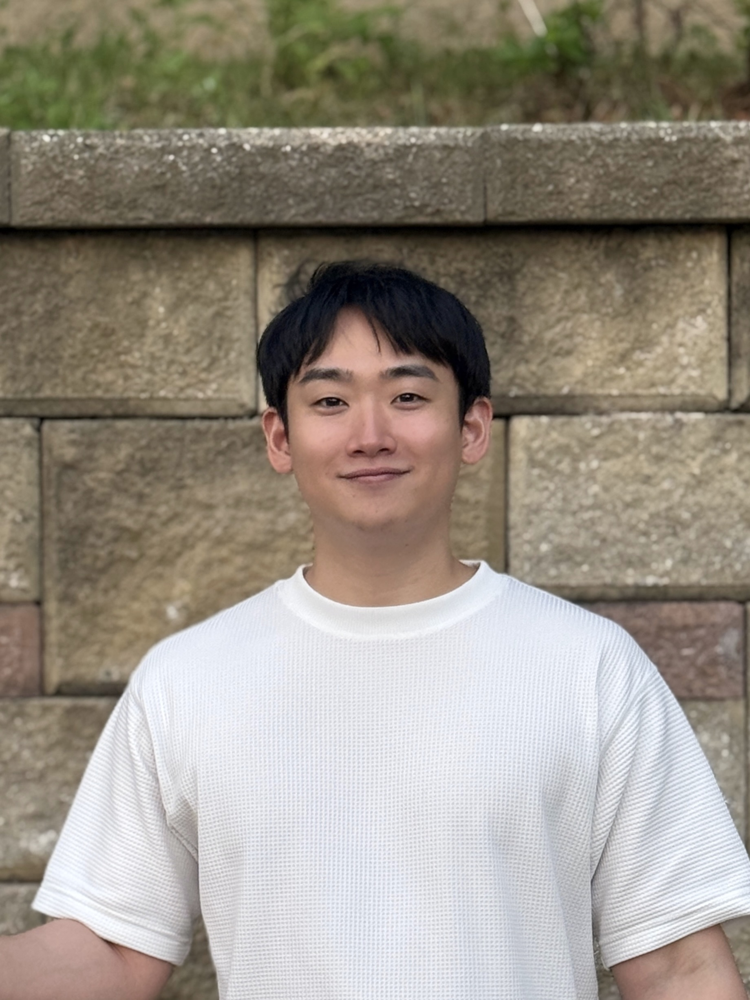

|
Hyun Jin Cho I will join the University of Birmingham as a PhD student in Computer Science in Autumn 2026, advised by Prof. Hyung Jin Chang and Prof. Aleš Leonardis. I am currently a researcher at the Korea Institute of Industrial Technology (KITECH). I received my M.S. in Advanced Imaging Science from Chung-Ang University in 2025, advised by Prof. Jongwon Choi. My PhD research will focus on inclusive 3D human understanding for XR and assistive interaction. In this direction, I will also contribute to a Google-funded project, "Improving Accessibility and Equitability in Human Understanding for XR," supported by a Google Unrestricted Research Gift awarded to our research group. |
 |
PUBLICATIONSI'm interested in computer vision, deep learning, 3D human understanding, and human-centred AI. Most of my research is about recovering and modelling humans in 3D (shape, pose, motion, etc) from images, with applications in XR and assistive interaction. |

|
AJAHR: Amputated Joint Aware 3D Human Mesh Recovery
Hyunjin Cho*, Giyun Choi*, Jongwon Choi ICCV, 2025 (* Equal Contribution) project page / arXiv / supplement / bibtex |

|
Reference-Based Microscopic Defect Detection in High Resolution Printed Media Using Learnable Frequency Decomposition
Wonwoo No, Hyunjin Cho, Hong-In Won, Hyunchul Tae IEEE Access, 2026 published Work done at KITECH paper / bibtex |
EXPERIENCE |
|
PhD Student, Computer Science, University of Birmingham, Edgbaston, UK Sep.2026 (Incoming) |
|
Researcher, Manufacturing AI Research Center at KITECH(MAIK), Incheon, Korea 2025 ~ Present |
|
Research Intern, SNU AILab, Suwon, Korea 2025 |
 M.S. in Advanced Imaging Science, Chung-Ang University (CAU), Seoul, Korea Advisor: Prof. Jongwon Choi · 2023 ~ 2025 |
|
Research Assistant, VILAB, Chung-Ang University (CAU), Seoul, Korea 2023 ~ 2025 |
|
SDR, Fasoo, Seoul, Korea 2020 ~ 2023 |
|
B.S. in Electrical and Electronic Engineering, Chung-Ang University (CAU), Seoul, Korea 2010 ~ 2019 |
|
University PR Ambassador (중앙사랑), 20th Generation, Chung-Ang University (CAU), Seoul, Korea Public Relations Office Intern · 2012 ~ 2013 |